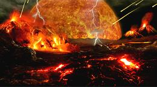
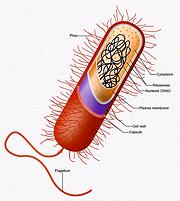
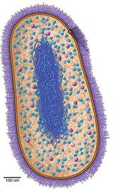
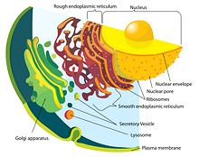
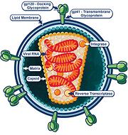

Life seemed so simple - not so very long ago. There were two "kingdoms", Vegetabilia and Animalia. But entities were found that just didn't seem to fit comfortably, so Vegetabilia was divided into Plantae (entities that were definitely plants) and Protista (entities that didn't seem to be either plants or animals). Then it got complicated, up to 8 kingdoms, and now the whole kingdom concept has pretty much collapsed.
Fortunately, for culinary purposes, we can simplify things
quite a bit, by ignoring a bunch of whole "kingdoms" that aren't
particularly edible. So here we consider only edible branches - but they
are by far the most important branches anyway.
Illustration of Plant Eukaryote Cell Structure by
LadyofHats contributed to the Public Domain (click on it for larger)
.

SAFARI Users |
|
In the Beginning was LUCA Just after the Hadean Age when the Earth was only about 750 million years old (About 3.7 billion years ago), LUCA (Last Universal Common Ancestor) came to be. LUCA was not the first life form on Earth, but is the ancestor of all life we can identify, living or extinct. Genetic research has placed LUCA in a hot, toxic, metal-laden, gassy environment, very like the hot, toxic, metal-laden, gassy environment of deep sea vents that still exist today. Similar conditions probably also existed on the surface in those formative times. Click here for larger Hadean and Archean Illustrations, and here for Timelines of the World & Life. From LUCA evolved two domains of life, Bacteria and Archaea. From Archaea evolved the third, Eukaryota. The fierce debate as to whether LUCA was alive, or just "half alive", or formed in the deep sea or on the surface, are entertainments for specialists and need not concern us here. Domain Bacteria These simple (comparatively) single celled organisms have been with us since evolving from LUCA about 3.5 billion years ago. They remain in the same basic form, having no cell nucleus or internal membranes. Bacteria constitute more of the Earth's biomass than animals and plants together. The human body contains 30% more Bacteria cells than Animal Eukaryote cells (the "10 times as many" theory has been debunked), and is dependent on these Bacteria for digestion and some other functions. Illustration (Click for larger view, details and licensing). For culinary purposes, bacteria are also very important, for things like making vinegar, wine, cheese and many other products. Bacterial fermentation is also important for detoxifying soybeans and similar activities. One type, Cyanobacteria, developed advanced photosynthesis (about 3.4
billion years ago) - using the sun's energy to break Carbon Dioxide and
release Oxygen. It's runaway success eventually resulted in catastrophe.
First came the "Great Rust" (to 2.5 billion years ago), then, with nothing
left to rust, free Oxygen gathered in the atmosphere and poisoned most
life on Earth. Thinning of the atmosphere and reduction of greenhouse
gasses resulted in the longest Ice Age this world has experienced (2.4
billion years ago for 300 million years). It is this catastrophe that made
our form of life possible.
Domain Archaea These single celled life forms are about the size and appearance of bacteria, and originated at about the same time (3.5 billion years ago). They were classified as bacteria until 1977, when advanced genetic analysis caused them to be placed in their own domain. Not a lot is yet known about Archaea. They were thought to live mostly in extreme environments but now they have been found in the ocean, soil and the human mouth, gut and skin. Archaea have not been much studied because they are neither parasites
nor do they cause diseases. They are, however important to life cycles
of the planet, and may account for 20% of Earth's biomass. Living
transition forms have been found deep in sediments off the Arctic coast,
and later elsewhere, making it clear that Eucaryotes developed from
Archaea. Archaea are still so little known their culinary value is
undefined, but they are likely important to digestion.
Illustration (Click for
larger view, details and licensing).
Domain Eukaryota These are the "higher" life forms, with a much more complex cell structure, and tremendously larger size than Bacteria or Archaea - around 10,000 times the size. They first appeared about 2.2 billion years ago. Since living transition forms have been found, it is pretty certain Eukaryotes are descended from an Archaea who's DNA got entangled with the DNA of a Eubacteria. Further bacterial DNA was added over time. The really big difference is that some (parisitic) bacteria infected this proto-eukariyote and took up residence in the very large and comfortable cells. These bacteria evolved to be highly beneficial, eventually becoming the Mitochondria totally essential to our lives today. These entities retained their own separate DNA, so Eukaryote cells set up Internal membranes to keep things orderly. Most important, these internal membranes encapsulated a cell nucleus, the definitive characteristic of Eukaryota. Illustration by Mariana Ruiz Villarreal (LadyofHats) contributed to the Public Domain. Eukaryota continued to grow larger and develop complex internal organs. They are unique in their ability to organize into large, complex multi-cellular entities, such as plants, animals and fungus (beginning about 1.5 billion years ago). They also developed sexual reproduction, about 1.25 billion years ago. Evolution was extremely slow until the invention of sex - then it took off like gangbusters. The Eukariotes evolved into several distinct lineages: AnimalsandFungi:(Opisthokonta) descended from a common Eukaryote ancestor. They both live by breaking down and digesting dead and living plant and animal material. There are no significant exceptions.Green Plants:(Archaeplastida) were formed by Eukaryotes already containing Mitochondria. These also engulfed a form of Cyanobacteria, which evolved into Chloroplasts. These Cyanobacteria enable plants to generate their own food from sunlight, carbon dioxide and minerals, and to breath out Oxygen. Like Mitochondria, Chloroplasts have their own separate DNA. To some extent plants also depend on fungi to break down rock to release the minerals they need - and many depend on animals for their reproductive strategy.Brown Algae:(Heterokonts) are of the plant lineage and similar to Green Plants, but they have some important differences. Their genetics seem to be from a merger of two different Epistokonths. This line provides kelp, and other very important sea vegetables.
Virus [viri, viruses, viron (singular)] These entities are generally 100th the size of a Bacteria and most cannot be seen with an optical microscope. They have many shapes, but their structure is very similar to the HIV virus illustrated here. Whether or not they are "life forms" is a matter of opinion. They have been described as "organisms on the edge of life". Unlike the other cells on this page they lack Ribosomes, essential for reproduction. While tiny and relatively simple, Viri are clearly not precursors to LUCA, as they can only reproduce by infecting post-LUCA cells. They may have originated from DNA fragments of living cells. Their culinary value is negative, as they damage and kill food (and people), so we consider them no further here, except in matters of food safety. Illustration (Click for larger view, details and licensing). |